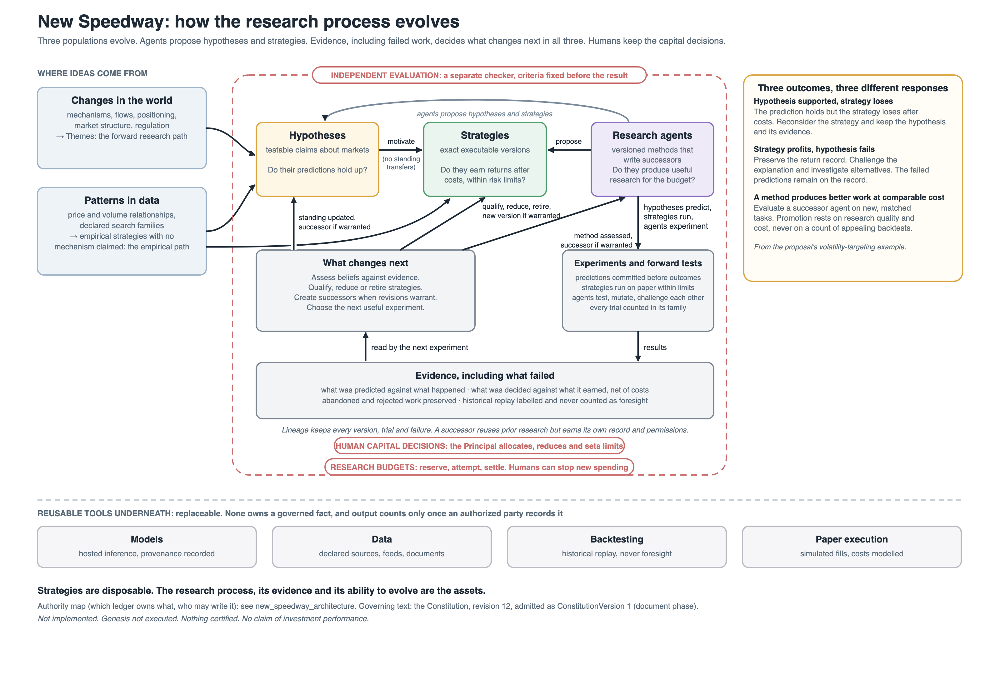

<section id="appendix-loop" data-transition="fade" style="background:#FBFAF6;color:#1B2A41;font-family:'Public Sans', Arial, sans-serif;padding:96px 128px 160px;display:flex;flex-direction:column;gap:20px">
<div style="display:flex;align-items:baseline;gap:24px">
<p style="font-size:24px;letter-spacing:3px;text-transform:uppercase;color:#C98A2B;font-weight:600">Appendix</p>
<h2 style="font-family:'Libre Baskerville', Georgia, serif;font-size:44px;font-weight:400;line-height:1.1">How the research process evolves</h2>
</div>

<p style="position:absolute;left:128px;bottom:64px;font-size:24px;color:#6A7179;width:1400px">For questions. The main slides translate this into outcomes.</p>
<aside>Keep this for questions about how the loop closes across all three populations.</aside>
</section>
